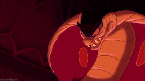
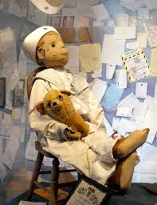

When I was around 6, I had a terrible, recurring nightmare about Jafar from Aladdin. Jafar - in snake form - chased me around my house. Our ranch-style house was laid out so that I could essentially run in a circle: living room - sunroom - my parents' bedroom - hallway - back to the living room. I would run past my parents and sister, and they would call out for me to stop running. Each time I had the nightmare, I would wake up right before snake-Jafar caught me.

I was finally able to stop waking up terrified when I let the nightmare run its course. It started like normal. Snake-Jafar chased me in a circle around the house, my family told me to stop running, but I kept going. Finally, I ran out of steam in my parents' room. I sat on their bed, waiting for snake-Jafar to catch me and eat me.
He slithered into the room behind me.
He crept up to the edge of the bed.
He dropped off a bundle of Aladdin toys, smiled at me, and left. All he wanted was to give me some toys.
The worst nightmare I ever had was about Robert the doll. You can read his full story here.
To summarize, Robert is a doll that was supposedly enchanted by the maid who worked for the Otto family. Their son loved the doll, but after strange events occured in the house, they locked the doll in the attic. People passing by the house said they would often see the doll sitting in the attic window, and the family would hear him running around the attic at night.
I learned about Robert when I was 8. My dad and I watched a show about paranormal events, because he thought that was a good idea, I guess. After we watched the show, I had nightmares about Robert occasionally, every few months.
So, Robert the doll is kept in a house in Key West. We went on a cruise that stopped in Key West. You can probably tell where I'm going with this. My dad took me on a guided tour of the island, and one of the stops was the house where Robert is kept.

Cue the meltdown, because obviously I was unprepared to confront the real-life version of my nightmares. My father is a man of endless questionable choices.